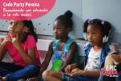
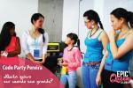
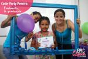
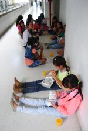
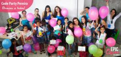

X

CodeParty Pereira fue realizado en Noviembre del 2015, en la
Universidad Tecnológica de Pereira (UTP).
En este evento realizamos diferentes actividades para introducir
a niñas entre 7 y 12 años al pensamiento lógico y un pequeño
vistazo al mundo de la programación.
Agradecemos a la UTP y al Grupo de Investigación Sirius por los
recursos entregados.
-

Inscripciones y recibimiento de las niñas.
-

Espacio de trabajo.
-

Contamos con la role model Maria Paz, la cual nos cuenta su experiencia trabajando en las páginas web (front-end).
-

Rompemos el hielo con diferentes preguntas acerca del futuro profesional de las niñas. A la vez, contamos nuestra experiencia al trabajar con tecnología y programación.
-

Juego inicial para la introducción al pensamiento secuencial.
-

La felicidad caracterizó éste evento.
-

Un pequeño break con alimentos sanos.
-

Aprendiendo y jugando con la hora del código.
-

Después de realizar la hora del código, entregamos diplomas simbólicos junto con dulces y una bomba.
-

-

Diploma simbólico junto con regalos.
-

-

Un recuerdo para todos.
-

-

Felicitaciones a todas las niñas que hicieron parte de este proceso.